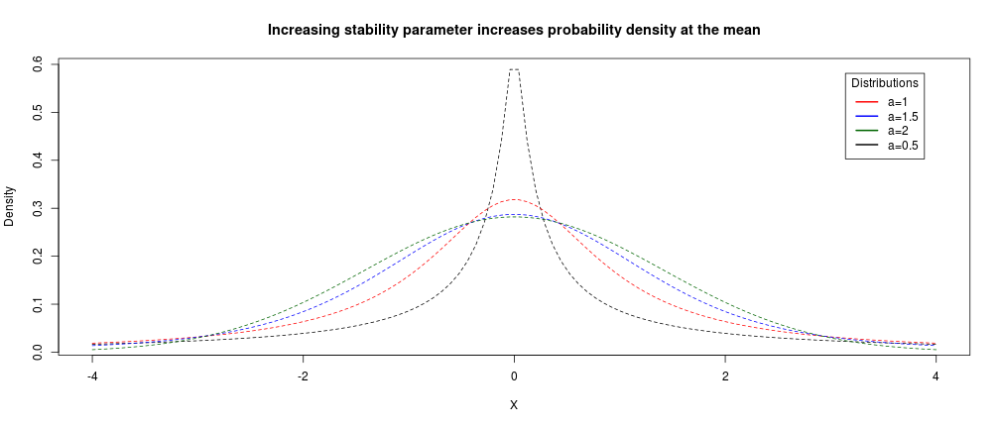
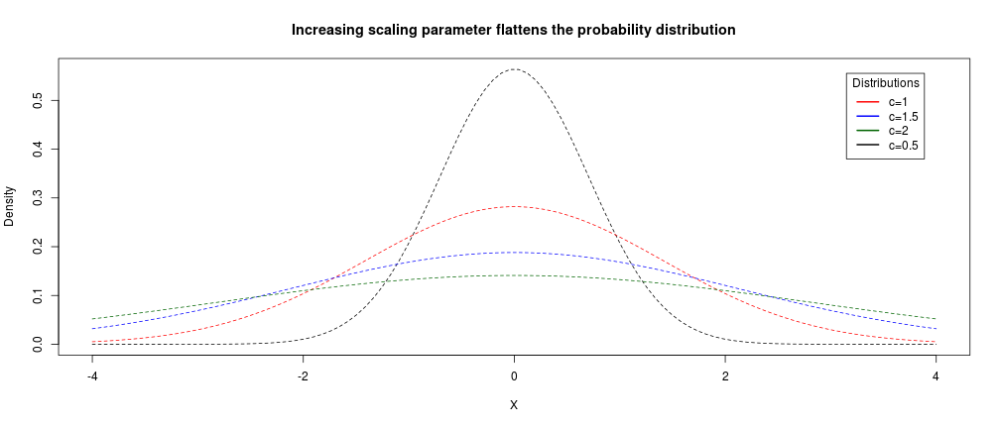
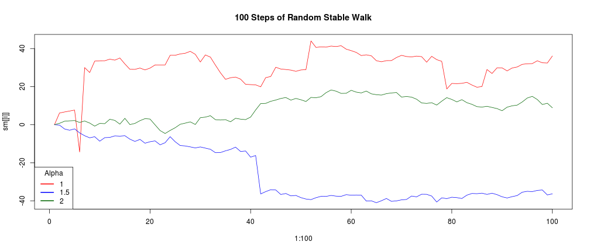

- Bayesian Inference and Phylogenetics
- Model Selection Criteria: DIC, PBIC, PSRF
- Brownian Motion vs the "Stable"" Model
- Hands-On Work with SimpleTraits
Juan M Vazquez
# Set seed for reproducibility
set.seed(123)
# Tidyverse, for dataframe data wrangling
library(tidyverse)
# StableDist, for the Stable Distribution
library(stabledist)
# ggtree, to visualize the tree (also conveniently imports everything else we may need to manipulate the trees)
library(ggtree)
Paradigm of Frequentist Statistics:
The alternate view of Bayesian Statistics:
Recall that given our parameters $\theta$, and our data $D$, the probability of our parameters given the data is given by:
$$ P(\theta|D) = \frac{P(\theta)P(D|\theta)}{P(D)} $$
Recall that given our parameters $\theta$, and our data $D$, the probability of our parameters given the data is given by:
$$ P(\theta|D) = \frac{\boldsymbol{P(\theta)}P(D|\theta)}{P(D)} $$
$\boldsymbol{P(\theta)}$ is known our prior, and represents our a priori notions of what the probability of our parameters are.
Your prior will be a distribution selected based on your prior notions of the reality of the situation
Done right, the nitty-gritty details of your prior actually shouldn't matter too much!
How so?
Consider this form of Bayes Law:
$$ P(\theta|D) \propto P(\theta)P(D|\theta) $$
As you can see, your prior and your likelihood for a given posterior will be inversely proportional.
Consider this form of Bayes Law:
$$ P(\theta|D) \propto P(\theta)\boldsymbol{P(D|\theta)} $$
As you can see, your prior and your likelihood for a given posterior will be inversely proportional.
Consider this form of Bayes Law:
$$ P(\theta|D) \propto \boldsymbol{P(\theta)}P(D|\theta) $$
As you can see, your prior and your likelihood for a given posterior will be inversely proportional.
You should rarely if ever be using a uniform prior ($P(\theta_A)=P(\theta_B)=P(\theta_C)$) - leads to gross over/under estimations in datasets (that said, as we'll see, they have their place in the world)
3 ways to properly select a prior:
Realistically-speaking, one should always use a combination of all approaches to test the robustness of all results.
Recall that given our parameters $\theta$, and our data $D$, the probability of our parameters given the data is given by:
$$ P(\theta|D) = \frac{P(\theta)\boldsymbol{P(D|\theta)}}{P(D)} $$
$\boldsymbol{P(D|\theta)}$ is the likelihood of our data based on our chosen models and parameters
Calculating the likelihood is where the "bulk" of the computational workload takes place, comparing your data to the data expected by the model and testing for fit
Recall that given our parameters $\theta$, and our data $D$, the probability of our parameters given the data is given by:
$$ P(\theta|D) = \frac{P(\theta)P(D|\theta)}{\boldsymbol{P(D)}} $$
$\boldsymbol{P(D)}$ is the probability of the data, which is a normalization factor.
Calculated as the sum of $P(\theta)P(D|\theta)$ for all $\theta$ tested.
In practice, integration of curves during MCMC exploration negates need for calculating $P(D)$
You can also add in a tree if you're unsure about the tree: $$ P(\theta| D,T,\theta_T) = \frac{P(\theta)P(D,T,\theta_T|\theta)}{P(D,T,\theta_T)} $$
We can therefore also calculate the Posterior Probability of our parameters $\theta$ in the context of uncertainty in the tree
Hierarchical Bayes: If you're not sure about the parameters in whatever you're adding, just add more Bayes!™ *
*Note that this will increase the dimentionality of your problem!
Including models, the general formula becomes: $$ P(\theta_M ,M|D,T, \theta_T ) = \frac{P(\theta_M ,M)P(D,T, \theta_T |\theta_M ,M)}{P(D,T, \theta_T )} $$
The model - being one of the questions, not the framework - has its posterior probabilties calculated along with its parameters
As we discussed in class, Akaike's Information Criterion (AIC) is a useful metric for comparing how different models reflect reality $$AIC = -2log(\mathcal{L}) + 2K$$ Where $log(\mathcal{L})$ is the log likelihood of your model, and $K$ is the number of free parameters in your model
As we discussed in class, Akaike's Information Criterion (AIC) is a useful metric for comparing how different models reflect reality $$AIC = -2log(\mathcal{L}) + 2K$$ Where $log(\mathcal{L})$ is the log likelihood of your model, and $K$ is the number of free parameters in your model
Also as mentioned, there are many flavors of ICs - of note, there's the Schwartz Bayesian Information Criterion (SBIC): $$BIC = -2log(\mathcal{L}) + 2log(n)K; n>>k $$ Where $n$ is the sample size of your data.
Note how the effect of the penalty in BIC is now proportional to the size of your data as well.
Deviance ($D$): Measure of goodness-of-fit at each step of the Markov Chain
$$ D = -2log(\mathcal{L})+2log(P(Data)) $$
Recall that in the case of MCMC, just as we can integrate over the resulting probability to deal with $P(Data)$, in the MCMC context this term also disappears and becomes a more familiar:
$$ D = -2log(\mathcal{L}) $$
Since unlike ML, we have no stable parameters, we need another way of estimating $K$.
Let's define $p_d$ as an estimate of the number of parameters in the parameter space of $\theta$ being considered.
Since our MCMC is effectively tracing a line over a probability distribution, we can use that to our advantage:
From the distribuiton generated via MCMC, we can trivially find out $p_d$, which is reported in the output of all Bayesian MCMC software packages
DIC is defined as:
$$ DIC = \overline{D(\theta)} + p_d $$
And the Bayesian Predictive Information Criterion (BPIC, PBIC in the output files): $$ BPIC = \overline{D(\theta)} +2p_d $$
Note that this is just giving extra weight to the parameters because tree size is not a factor here, although it should play a role in this calculation.
Like with AIC, the value of DIC is not as important as $\Delta$DIC between two models
Take a trait of interest, with a constant mean of zero and a variance of $\sigma$^2.
By the Central Limit Theorem, we know that given a branch $b$ of length $t_b$, changes will continously accumulate along that branch as a normal distribution
Turns out the Normal distribution is but a special case of a class of distributions called Stable Distributions, which were first studied by Paul Levy in 1925.
Two parameters of note: $\alpha$ and $c$:
# Plot the stable distribution for constant gamma (c) and variable alpha
x <- seq(-4, 4, length=100)
a <- seq(0.5, 2, by = 0.5)
labels <- paste("a=", c(a, 0.5), sep = '')
plot.new()
hx <- lapply(a, function(a){dstable(x,alpha = a, beta = 0, gamma = 1, delta=0)})
colors <- c("red", "blue", "darkgreen", "black")
for (s in seq_along(hx)) {
lines(x, hx[[s]], type="l", col=colors[s], lty=2, xlab="",ylab="Density", main="")
}
legend("topright", inset=.05, title="Distributions",
labels, lwd=2, lty=c(1, 1, 1, 1, 2), col=colors)

# Plot the stable distribution for constant alpha and variable gamma
x <- seq(-4, 4, length=100)
c <- seq(1, 2, by = 0.5)
labels <- paste("c=", c(c, 0.5), sep = '')
hx <- lapply(c, function(c){dstable(x,alpha = 2, beta = 0, gamma = c, delta=0)})
colors <- c("red", "blue", "darkgreen", "black")
plot(x, dstable(x, alpha = 2, beta = 0, gamma = 0.5, delta=0), type="l", col=colors[4], lty=2, xlab="X", ylab="Density", main="Increasing scaling parameter flattens the probability distribution")
for (s in seq_along(hx)) {
lines(x, hx[[s]], type="l", col=colors[s], lty=2)
}
legend("topright", inset=.05, title="Distributions",
labels, lwd=2, lty=c(1, 1, 1, 1, 2), col=colors)

# first, let's simulate 100 datasets of 100 steps each:
y = sapply(1:50, function(x) c(0, rnorm(999, mean = 0, sd = 0.2))) # result is a matrix of random-normal vectors,
# centered on 0, with a sd of 0.2
layout(matrix(1:2, 1)) # layout two plotting frames
plot(1:20, cumsum(y[1:20, 1]), 'l', ylim = range(c(cumsum(y[1:100, 1]), cumsum(y[1:100, 2]))), main = "tree of 20 steps")
lines(1:20, cumsum(y[1:20, 2]))
plot(1:100, cumsum(y[1:100, 1]), 'l', ylim = range(c(cumsum(y[1:100, 1]), cumsum(y[1:100, 2]))), main = "tree of 100 steps")
lines(1:100, cumsum(y[1:100, 2]))
# first, let's simulate 100 datasets of 100 steps each:
sm = lapply(seq(1,2, by=0.5), function(a){
m <- replicate(50, c(0, rstable(999, alpha = a, beta = 0, delta = 0, gamma = 1))) # result is a matrix of
# random-stable vectors
n <- cumsum(m[1:100,1]) # return a vector of the
return(n)
})
range_sm <- range(c(sm))
for (i in seq_along(sm)){
if (i==1){
plot(1:100, sm[[i]], 'l', ylim = range_sm, main = "100 Steps of Random Stable Walk", col=colors[i])
} else{
lines(1:100, sm[[i]], col=colors[i])
}
}
legend("bottomleft", title="Alpha", as.character(seq(1,2,by=0.5)), lwd=2, lty=c(1, 1, 1, 1, 2), col=colors)

Brownian Motion with a Normal distribution assumes a constant, finite variance throughout the tree, but there's nothing dictating that that actually be the case in biology!
Its plausible that a trait could undergo a massive shift in a given branch, then continue on a normal random walk from there.
Perhaps you noticed that the stable model has two new parameters to be estimated?
For $P(\alpha)$, the program will use a uniform prior by default, since they demonstrated via simulations that $\alpha$ does not greatly affect the ancestral state reconstructions.
For $P(c)$, the program will use an inverted gamma distribution, which is the conjugate distribution of the stable distribution.
This has the advantage that, even though technically we've now introduced new priors for the Gamma, there is a well-established analytical solution to the optimal values of these priors!
Using the --brownianflags, however, you can default $P(\alpha)$ and $P(c)$ to use values that result in the stable model collapsing into the Brownian model; --brownianstrict further constrains the evolution rate to be resolved via Maximum Likelihood.
Originally, the paper used the evolution of Eutherian body size as a compelling argument in favor of the Stable Model; however, it only used extant data for its analysis.
A paper by Mark Puttick and Gavin Thomas in 2015 (which begins with the wonderful observation "Most of life is extinct") compiled accurate datasets of body mass of both extant and extinct Afrotherians, which leads us to our current investigation: how do the ancestral rate reconstructions compare when we when incorporate extinct species into the tree?
In the "data" folder you'll see 4 files. The ones ending in ".tree" are time-calibrated Newick trees; the ".data" files are a tab-delimited species-body mass table.
The "Eutheria" files are those from the original analysis; the pair of "Eutheria_Afrotheria_Fossils" files have had the tree from the Puttick and Thomas 2015 paper spliced into the Eutherian phylogeny.
As you'll see, there are 4 subfolders in the "output" folder, each with the results of a different run:
Additionally, I ran "stabletraitssum --path /path/to/file/filenameroot" in each folder, with --brownian as a flag in the appropriate folders.
Some more things to play around with: